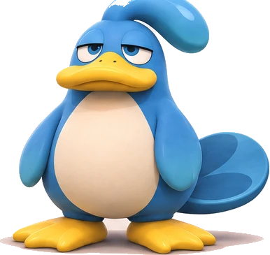

웅덩이삐약
3 / 12도감에 등록되었습니다
화면 구성은 docs/proposal.md, docs/demo-scenario.md, docs/dialogue-style.md, docs/schema.md의 요구사항을 기준으로 했다. 색은 확정 가이드, 컴포넌트는 docs/design-system.md를 따른다. 주 사용자는 만 6–11세이고 결제와 설정은 보호자가 하므로, 화면은 아이가 읽을 수 있는 수준에서 차분하게 두었다. 캐릭터는 승인본 character-production-01에서 잘라 왔다(art/design/wf/).
차 화면의 번호를 입력하세요
차에서 알로를 실행하면 6자리 번호가 표시됩니다.
이름, 생년월일, 연락처는 입력받지 않습니다
차 화면의 QR 또는 6자리 번호로 페어링한다. 오류는 Status Banner(오류)에 무엇이 틀렸고 무엇을 하면 되는지만 쓴다.
아이 개인정보 입력란은 두지 않는다(CLAUDE.md 규칙 3). 보호자가 안심할 수 있도록 하단에 한 줄로 알린다.
알 선택
알마다 부화에 필요한 주행 거리가 다릅니다.
내비를 켜면 도착 예정 시간의 절반 지점에서, 켜지 않으면 목표 거리의 절반 지점에서 부화합니다. 거리가 모자라면 다음 주행으로 이어집니다.
알 등급은 시간이 아니라 주행 거리로 나눈다(작은 ~10km, 중간 ~50km, 긴 ~150km). eggTier는 small · mid · large.
연결 확인은 Status Banner(완료)로 이 화면 맨 위에 띄운다.
중간 알
내비 도착 예정 시간의 절반 지점에서 부화합니다
Egg Progress는 남은 양을 말로 쓰고(“앞으로 12분”, 내비를 쓰지 않으면 “앞으로 9km”) 퍼센트는 보조 글자로 둔다. 환경 태그는 센서 추정값이라 Tag Chip으로만 보여 주고, 빗방울 무늬는 움직이지 않는다.
선택된 탭은 동작 초록이다. 이 단계에서는 Primary 버튼이 없다.
알이 흔들렸어요
감싸 주면 알이 안정됩니다. 급제동이 적을수록 더 높은 등급의 친구가 나옵니다.
급제동·급조향 신호가 오면 진행 영역이 이 문구와 큰 버튼으로 바뀐다. 흔들리는 차 안에서 눌러야 하므로 이 화면의 버튼만 Large 72를 쓴다.
알만 흔들리고 화면은 움직이지 않는다(멀미). 동작 줄이기를 켠 기기에서는 기운 채로 멈춘다. 감싼 횟수는 careCount에 쌓인다.

웅덩이삐약
Puddle Pip
화면 전체가 알 노랑이 되는 건 이 화면 한 곳뿐이다(발견 = 노랑). 금 가기 3컷, 빛 2컷 뒤에 종이 나오고, 전체 2400ms에 한 번만 재생한다.
노랑 위 버튼은 동작 초록(흰 글자 6.50:1)이고, 노란 버튼은 노란 면에 두지 않는다. 시연 종은 물결지기이지만 컷이 아직 없어 웅덩이삐약으로 그렸다.
비 오는 날 물웅덩이에서 첨벙 태어났지.

물어보기
아이는 자유 입력 대신 그 순간 쓸 수 있는 질문 버튼 3–4개 중 하나를 고른다. 질문 ID만 답 뱅크로 가고, 답은 한 번에 하나(50자 이내)이다. 같은 질문을 다시 누르면 다른 문장이 나온다.
생물은 차의 기울기에 따라 조금 기울고, 무대와 화면은 고정된다. 말투는 docs/dialogue-style.md의 반말이다.
저기 봐! 산이야

Speech Bubble(Look)은 각진 왼쪽 아래 모서리가 생물을 가리키고, 영어 단어는 한 문장에 하나만 한글 뜻과 같이 보여 준다. 단어를 묻거나 틀리게 하지 않는다.
아이가 실제로 창밖을 보고 봤어!를 누르면 lookOutCount가 오른다. 그림은 look 포즈 대신 SURPRISED를 썼다.
도착했습니다
11월 7일 토요일 · 48km · 52분
도감에 등록되었습니다
위치 좌표는 저장하지 않고, 기록은 이 폰에만 남습니다
도착하면 오늘 만난 친구, 그날의 날씨·길, 주행 기록을 한 번에 보여 준다. 보호자는 희귀도를 정한 주행 품질(급제동·급조향)을 여기서 확인할 수 있다.
기록에는 날씨 태그와 길 종류만 남기고 좌표는 쓰지 않는다(규칙 2).
 길싹이
길싹이 등불나방
등불나방12종이 번호순 그리드로 보인다. 만난 칸은 종별 tint 바탕에 IDLE 컷과 이름, 등급 모양을 넣는다. 못 만난 칸은 옅은 녹색 면에 ?와 출현 힌트(data/species.json의 hint)만 두고 실루엣은 숨긴다.
시즌 종은 이 그리드에 따로 더하지 않았다(schema에 필드가 없다).
웅덩이삐약
일반Puddle Pip · 물 속성
등록 요건은 영어 이름, 속성, 등급, 획득 날짜·장소·날씨다. 장소는 좌표가 아니라 길 종류로 남긴다. 시간이 지나면 이 기록이 가족 여행 앨범이 된다.
무대를 좌우로 밀면 8방향 턴어라운드가 한 칸씩 넘어가고, 점 8개가 보는 방향을 알려 준다. 자동으로 돌리지 않는다.
주행 가능 거리318km
폰으로 연결하세요
알로 앱에서 QR을 스캔하거나 번호를 입력하세요
seat rear_right)가 오면 정차 상태의 알로 창에 QR과 6자리 번호를 함께 띄운다. 연결되면 “연결됨” 한 줄로 바뀐다.주행 가능 거리312km
주행 가능 거리298km
알이 62% 자랐어요
/game 상태(진행도, 케어 횟수)를 차 화면에 맞게 새로 그린다. 폰 화면을 미러링하는 것이 아니다. 제목은 Pleos Headline Small(48, ExtraBold)이고 조작은 폰에서 한다.주행 가능 거리298km
웅덩이삐약
물 속성 아이가 깨어났어요! 뒷자리에 물어보세요.
주행 가능 거리241km
도착했습니다
웅덩이삐약
비 · 고속도로 · 48km
v3의 정상 흐름에서 빠져 있던 화면이다. 개발이 임의로 정하지 않도록 요구사항 문서(docs/schema.md 세션 수명, docs/roadmap.md B-3·A-4, 기획서의 부화 폴백)에 있는 상태를 하나씩 그렸다. 알 그림은 보류라서 기존 알 자리표시를 그대로 쓴다.
11월 7일 토요일
2:02
뒷자리에 탑승했어요. 알을 품어 볼까요?
뒷좌석 점유 신호가 오면 폰에 알림이 간다. 앱을 열지 않아도 세션이 시작되는 것이 이 제품의 마찰 없음 근거다(기획서). 알림 문구에는 아이 이름이나 위치를 넣지 않는다.
알림을 누르면 연결 화면이 아니라 이전 세션이 있으면 18번, 없으면 1번으로 간다.
차량에 연결하는 중
잠시만 기다려 주세요
번호 확인에서 연결이 완료될 때까지의 대기 상태. 오류가 되면 1번의 오류 배너로, 성공하면 2번 알 선택으로 넘어간다.
회전하는 애니메이션은 쓰지 않고, 동작 줄이기 설정에서는 정지한 링으로 둔다.
어제부터 품은 알
지난 주행에서 거리가 모자라 부화하지 못했어요. 이어서 품습니다.
중간 알
내비를 켜지 않아 목표 거리의 절반 지점에서 부화합니다
일상 주행이 누적돼 “어제부터 품고 있는 알”이 생기는 폴백 흐름이다(기획서). 저장된 sessionId로 자동 재연결되면 알 선택을 건너뛰고 이 화면을 보여 준다.
이전 세션이 최종 종료된 경우 같은 세션을 재사용하지 않고 새 코드로 연결한다(schema 3.1). 알 진행도는 폰이 가진 값이다.
중간 알
연결되면 이어서 자랍니다
통신이 끊겨도 폰은 세션이 끝났다고 추측하지 않는다(schema 3.1). 알은 비를 맞는 무늬 없이 멈춘 모습으로 두고, 마지막으로 받은 진행도만 보여 준다.
이 상태에서는 감싸기와 노래를 막는다. 신호가 없는 동안 쌓은 케어를 인정할 방법이 계약에 없기 때문이다. 오류 색은 글자와 아이콘을 함께 쓴다.
중간 알
내비를 켜지 않아 목표 거리의 절반 지점에서 부화합니다
내비 도착 예정 시간이 없으면 남은 양을 거리로 말한다(“앞으로 9km”). 3번의 “앞으로 12분”과 같은 자리, 같은 서식이다.
비가 오지 않으므로 빗방울 무늬는 없다. 환경 칩은 있는 것만 보여 준다.
노래하는 중
알이 편안해하고 있어요. 손을 떼면 멈춰요.
길게 누르는 동안 알이 안정된다(로드맵 B-3). 눌린 버튼은 Primary(동작 초록)로 바뀌고, 화면은 움직이지 않고 알 둘레의 원만 번진다.
가정: 소리를 녹음하거나 마이크 권한을 요구하지 않고 누르고 있는 동작으로만 판정한다. B가 마이크를 쓰기로 하면 권한 안내 화면이 하나 더 필요하다.
알이 다시 편안해졌어요
급제동이 적을수록 더 높은 등급의 친구가 나옵니다.
4번에서 감싸기를 누르면 완료 배너와 누적 횟수(careCount)를 보여 주고 큰 버튼은 비활성으로 돌린다. 다음 흔들림이 올 때까지 3번 화면으로 돌아간다.
완료 알림은 Status Banner(완료)이고 효과음은 두지 않는다.
금 1 윗껍질에 가는 금
금 2 금이 옆으로 번짐
금 3 껍질이 벌어지기 직전
빛 1 틈에서 노란 빛
빛 2 화면이 알 노랑으로
금 가기 3컷, 빛 2컷 뒤에 5번 화면의 새 친구 장면으로 이어진다. 전체 2400ms에 한 번만 재생하고, 동작 줄이기에서는 마지막 컷만 보여 준다.
속성(물·어둠·일반)별 이펙트 차이는 컷 그림이 나온 뒤에 정한다. 지금은 구조와 순서만 그렸고 알 그림은 보류 상태의 자리표시다.
아직 함께할 친구가 없어요
알이 부화하면 여기서 만날 수 있어요.
알을 품는 동안 동행 탭을 누르면 보이는 빈 상태. 도감 빈 상태와 같이 “다음에 할 일” 버튼을 하나 둔다.
부화 전이므로 대사와 질문 버튼은 없다.
냠냠! 맛있다. 고마워.
물어보기
먹이 주기와 놀아 주기는 눌렀을 때 HAPPY 컷과 한 줄 대사로 반응한다(로드맵 B-3). 같은 먹이는 잠깐 비활성이고, 다른 버튼은 계속 쓸 수 있다.
대사는 상황 대사(dialogue-style.md 3-2절)이며 반말이다. 먹이 종류나 아이템 수집은 계약에 없어서 넣지 않았다.
도착했습니다
11월 7일 토요일 · 19km · 24분
아직 품는 중이에요
위치 좌표는 저장하지 않고, 기록은 이 폰에만 남습니다
목표 거리가 모자라 부화하지 못한 채 도착한 경우. 8번과 같은 서식에서 오늘 만난 친구 자리에 품고 있는 알을 넣고, 다음 주행으로 이어진다는 문장을 완료 배너로 알린다.
“실패”나 “아쉽다” 같은 표현은 쓰지 않는다. 진행도는 퍼센트 하나만 보여 준다.
아직 아무도 만나지 못한 상태. 12칸이 모두 힌트 칸이고 위에 안내 한 줄을 둔다. 힌트 문구는 data/species.json의 hint를 그대로 쓰는 자리다.
화면에는 9칸까지만 그렸고 나머지는 스크롤로 본다. 문구는 현재 species.json 값이다.
아직 못 만났어요
만나는 방법을 힌트로 알려 줄게요
희귀도는 돈이나 뽑기가 아니라 주행으로만 정해져요.
못 만난 칸을 누르면 이름과 모습을 숨긴 채 힌트만 보여 준다. 실루엣도 보여 주지 않는다(9번과 같은 원칙).
마지막 문장은 확률형 가차를 넣지 않는다는 기획서 전제를 보호자와 아이에게 알리는 자리다.
차량
알림
개인정보
알로 0.1
설정과 결제는 보호자가 한다(기획서). 지금 계약으로 만들 수 있는 것만 넣었다: 연결 해제, 탑승 알림, 받지 않는 정보 안내.
연결 해제의 데이터 동작(세션 삭제 여부)과 알림 설정 저장 위치는 문서에 없다. B와 C가 정하기 전까지는 화면 제안으로만 둔다.
주행 가능 거리318km
알이 자라려면
차의 속도가 필요해요
다음 창에 ‘위치 정보’라고 나오지만, 알로가 쓰는 건 차의 속도예요. 바다·산·도시 판정도 차 안에서만 하고, 위치는 어디에도 보내거나 저장하지 않아요.
SpeedNoticeScreen). 권한 이름은 위치지만 실제로는 속도만 읽는다는 것을 먼저 알린다. 문구는 strings.xml의 값을 그대로 썼다.주행 가능 거리318km
폰과 연결되었어요
뒷자리에서 알을 고르면 품기가 시작돼요.
meta.paired를 읽는다.주행 가능 거리241km
품고 있는 알이 없어요
뒷자리 폰에서 알을 골라 주세요.
car_egg_status idle)와 같은 뜻을 화면에도 쓴다. 안 보이는 알은 옅게 둔다. 버튼이 없으므로 운전자가 할 일은 없다.주행 가능 거리305km
주행 가능 거리309km
뒷자리 폰을 확인해 주세요
주행 가능 거리298km
바다 쪽으로 가 볼까요?
바다에서만 나오는 아이가 있어요. 직선으로 약 18km예요.
destinationSuggest, region은 coast·mountain·city). 주행 중에는 화면 없이 음성만 나가고(car_suggest, 80자), 버튼은 정차 중에만 둔다. 이벤트에는 지역 종류만 담고 장소 이름과 좌표는 넣지 않는다. accepted는 “요청을 전달했다”는 뜻이어서 이 화면에서도 “안내를 시작합니다”라고 쓰지 않는다. 정차 화면의 버튼 구성은 A의 확인이 필요하다.docs/ai-dialogue-design.md 4절). 지금은 4개를 그렸다: 이름, 어디서 왔어, 뭐 좋아해, 밖에 뭐 있어